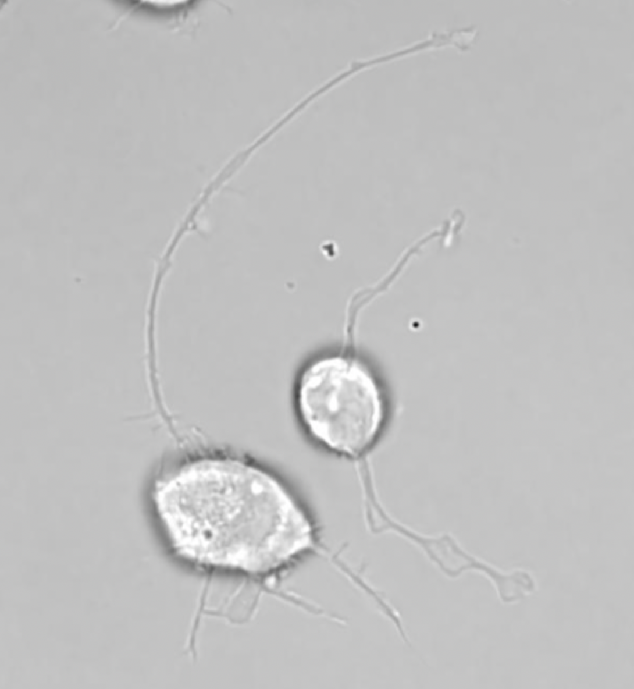

Biological Transport Networks
Center for Computational Biology · Flatiron Institute
Mission
Research
People
Publications
News
Contact
Constructing and De-constructing Neurons
Neuronal development as transport-limited growth & retraction
← Back to Research

Representative neuron morphology used to test transport-limited growth models.